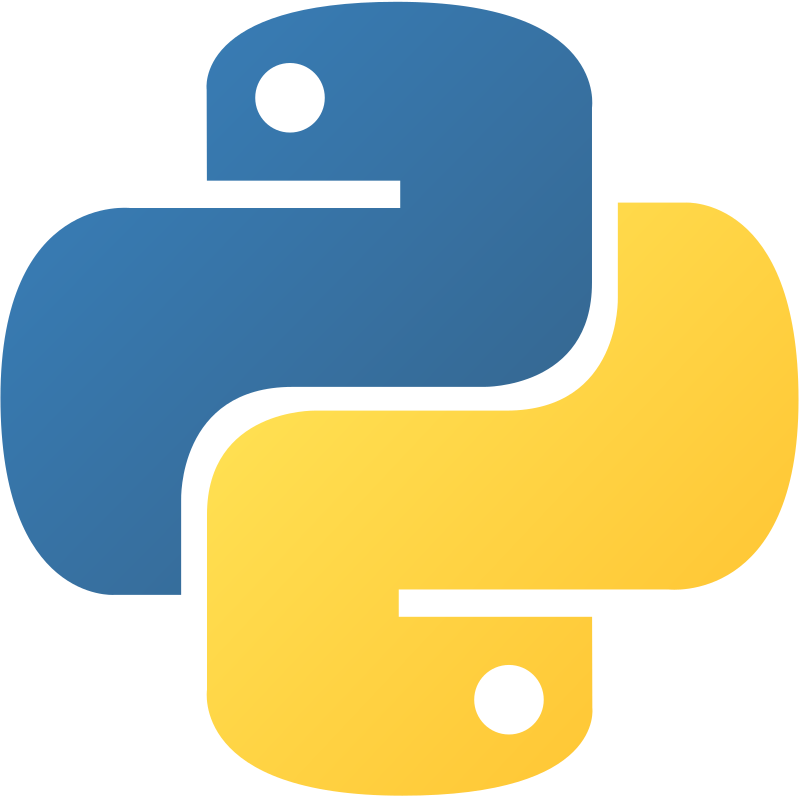
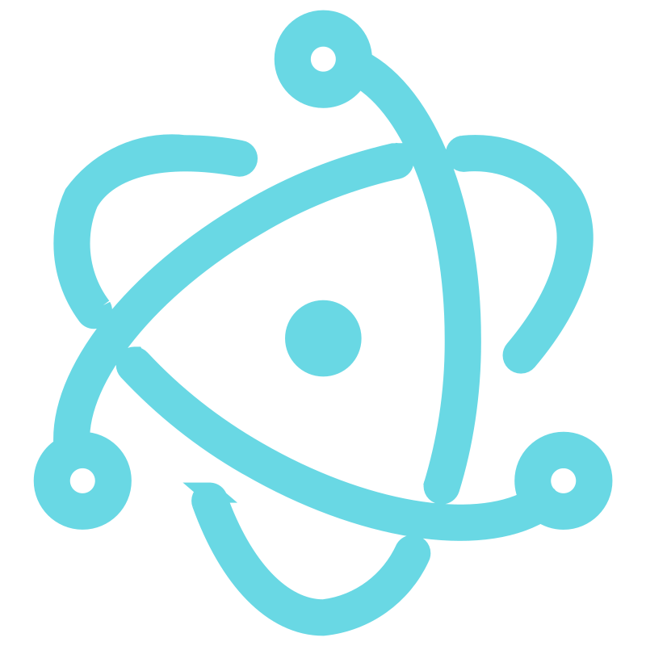

Disponible para trabajar
Andre Villamil
Estudiante de Ing. en Software & Desarrollador Full Stack
Villahermosa, Tabasco, México
Estudiante de Ing. en Software & Desarrollador Full Stack
Villahermosa, Tabasco, México
Soy un estudiante de Ingeniería en Software apasionado por el desarrollo tecnológico. Me encanta lo que hago y tengo grandes ambiciones de seguir aprendiendo y creciendo constantemente en este campo. Creo firmemente en la importancia de aceptar los errores como parte del proceso de aprendizaje y siempre busco nuevas oportunidades para expandir mis conocimientos. Mi objetivo es convertirme en un desarrollador completo y contribuir con soluciones innovadoras que generen un impacto positivo.

Python
ElectronActualmente estoy cursando la carrera de Ingeniería en Software, donde estoy adquiriendo conocimientos fundamentales en desarrollo de software, algoritmos, estructuras de datos y metodologías de programación. Estoy comprometido con mi formación académica y busco aplicar lo aprendido en proyectos prácticos.
Plataforma educativa completa con sistema de gestión de usuarios, creación de cursos, seguimiento de progreso y sistema de certificaciones.